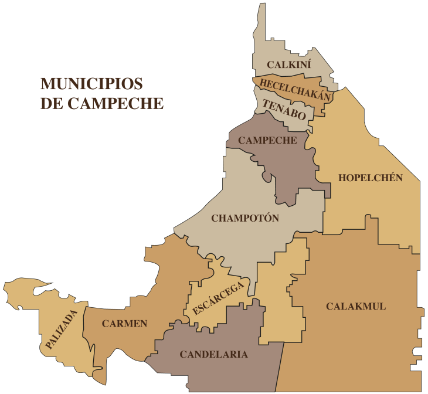

El estado de Campeche está dividido en 13 municipios. Cada uno posee características históricas, culturales y económicas propias.
Capital del estado. Destaca por su ciudad amurallada, construida para defenderse de ataques piratas durante la época colonial. Su centro histórico es Patrimonio Cultural de la Humanidad por la UNESCO.
Conocido por la actividad petrolera y pesquera. Se ubica en la Isla del Carmen y es uno de los municipios más importantes económicamente del estado.
Famoso por su historia relacionada con enfrentamientos entre mayas y españoles. Su economía se basa en la pesca, agricultura y ganadería.
Municipio con fuerte herencia maya y tradición artesanal. Destaca la elaboración de textiles y bordados típicos.
Reconocido por su producción agrícola y por conservar costumbres y tradiciones mayas.
Importante zona agrícola y apícola. Su nombre significa “lugar de los cinco pozos” en lengua maya.
Pueblo pintoresco ubicado a orillas del río Palizada. Destaca por sus casas con techos de teja francesa y su ambiente tradicional.
Municipio pequeño conocido por sus festividades religiosas y actividades agrícolas.
Importante centro comercial y de comunicaciones del sur del estado. Es considerado un punto estratégico carretero y ferroviario.
Famoso por la Reserva de la Biosfera y la antigua ciudad maya de Zona Arqueológica de Calakmul, una de las más importantes de Mesoamérica.
Municipio con abundantes recursos naturales y actividad agrícola y ganadera.
Municipio costero creado recientemente. Destaca por su puerto, pesca y atractivo turístico.
Uno de los municipios más nuevos del estado. Conserva importantes tradiciones mayas y actividades artesanales.
Los municipios de Campeche destacan por: